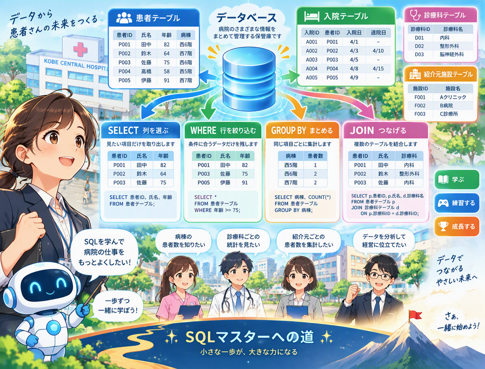

初級編 / UNIT 8
初級 UNIT 8
HAVING
集計結果を絞る

1. 教育
今回理解する操作：集計結果を絞る
業務上の依頼：2人以上の病棟を表示する
SELECT ward, COUNT(*) FROM patients GROUP BY ward HAVING COUNT(*) >= 2;
構文の記号や単語を当てるのではなく、処理前と処理後でデータがどう変わるかを理解します。
2. 例題 1問
依頼：2人以上の病棟を表示する
- 依頼の目的を日本語で整理する
- 対象テーブルを確認する
- 必要なデータ操作を判断する
- 結果を予測してからSQLを見る
例題の解答と解説
SELECT ward, COUNT(*) FROM patients GROUP BY ward HAVING COUNT(*) >= 2;
集計結果を絞る
3. 練習問題 1：必要な操作
「2人以上の病棟を表示する」ために必要な操作はどれですか？
答え
集計結果を絞る
4. 練習問題 2：実行結果を読む
SELECT ward, COUNT(*) FROM patients GROUP BY ward HAVING COUNT(*) >= 2;
このSQLが行う処理を選んでください。
答え
2人以上の病棟を表示する
5. 練習問題 3：正しいSQL
依頼に対応するSQLを選んでください。
答え
SELECT ward, COUNT(*) FROM patients GROUP BY ward HAVING COUNT(*) >= 2;
6. 練習問題 4：データの変化
処理前と処理後で、行・列・順序・集計結果のどこが変化するか説明してください。
解説例
集計結果を絞る
7. UNITテスト 1
別のデータでも同じ操作が必要な依頼を選んでください。
8. UNITテスト 2
SQLの構造を選択・部分入力で完成させてください。
テスト後に解答を確認
SELECT ward, COUNT(*) FROM patients GROUP BY ward HAVING COUNT(*) >= 2;